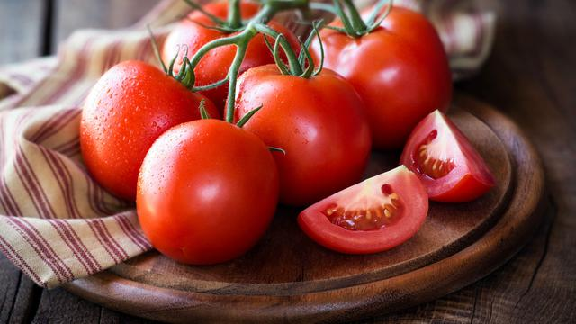

Artikel / Cara menanam tomat
Cara menanam tomat yang siap panen 4 bulan
02 Desember 2022
Tomat termasuk tanaman buah yang banyak ditanam di segala dataran. Umurnya dalam satu musim, ternyata hanya 4 bulan saja. Yuk, ketahui cara menanam tomat lewat artikel ini! Cara menanam tomat dalam polybag sebaiknya melalui tahap persemaian terlebih dahulu. Benih yang berupa biji harus disemaikan menjadi bibit tanaman. Langkah ini diperlukan karena benih yang baru tumbuh memerlukan perlakuan yang berbeda dengan tanaman yang telah tumbuh besar. Siapkan tempat dan media persemaian terlabih dahulu. Pilih tempat persemaian yang terlindung dari hujan dan sinar matahari secara langsung. Media persemaian bisa bermacam-macam, silahkan baca cara membuat media persemaian untuk hortikuktura. Bentuk persemaian bisa berupa bedengan, rak semai, atau polybag semai. Untuk persemaian dengan bedengan, buat larikan diatas bedengan dengan kedalaman 1 cm dan jarak antar larik 5 cm. Kemudian tanam benih tomat pada tiap larik dengan jarak 3 cm, tutup permukaannya dan siram secukupnya. Untuk persemaian yang menggunakan ploybag, isi polybag dengan media persemaian. Bila tidak ada polybag bisa menggunakan kantung semai dari daun-daunan (bekong). Kemudian benamkan benih tomat sedalam 1 cm kedalam media tersebut. Lalu tutup permukaannya dan siram secukupnya. Setiap polybag cukup diisi satu benih. Setelah benih disemaikan, lakukan penyiraman setiap 2 kali sehari dengan gembor yang halus. Berhati-hatilah ketika menyiram, jangan sampai merusak permukaan persemaian. Pemupukan tambahan bisa diberikan setelah dua minggu dengan pupuk cair organik, pupuk kompos atau NPK. Perawatan lain yang harus dilakukan adalah penyiangan. Jangan sampai tumbuh gulma dalam area persemaian. Bibit tanaman tomat siap dipindahkan dari tempat persemaian ke dalam polybag setelah 30 hari atau sudah memiliki setidaknya 5 helai daun.